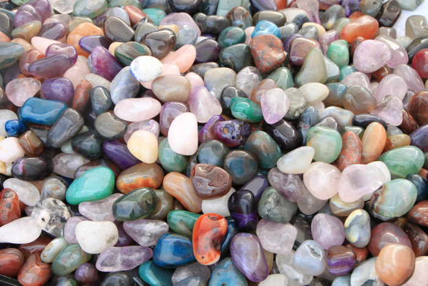

Introduction to GIS with ArcGIS Pro
The background to Geographic Information Systems (GIS) and an explanation of what it is will be covered in the lecture segment at the beginning of the class and the presentation and any other supporting materials will be available in Minerva. The lecture segment should help you to understand why you are doing these exercises. If you still aren’t sure, please ask Clare.
Learning outcomes
When you have completed this section of the workbook you will be able to
- demonstrate how to open a map project in ArcGIS
- select appropriate tools to navigate in a map document
- use layers to organise and display information on a map
- add information to a layout and prepare it for printing or display
- demonstrate different ways of finding help when using GIS
Introduction to the exercises
As a GIS specialist you have been asked by the Field Studies Council to produce a geological map of the area around the Malham Tarn National Nature Reserve (NNR).
For this first exercise I have created a basic geological map of Malham Tarn so that you can explore the GIS application and get used to basic navigation and functions. In future sessions you will be preparing the data and setting up the basics for yourself.
Obtaining and opening the sample map
The sample map is based on British Geological Survey data covering Malham Tarn in North Yorkshire and uses data from a number of sources with which you will become familiar during this module.
Extra image
This colourful image should cheer up your day. I’ve added it for “fun”.

And I’ll add some text afterwards for good measure